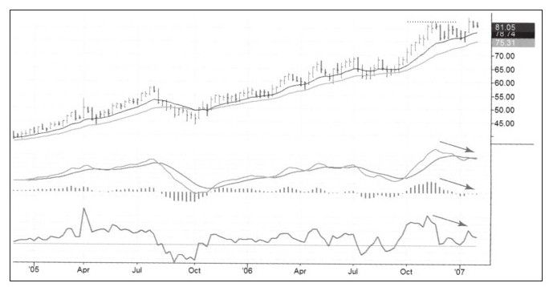
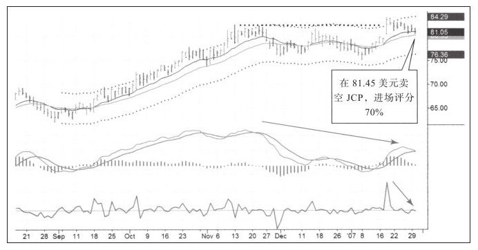
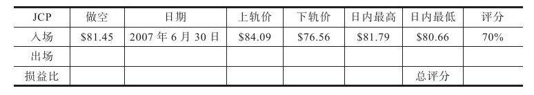
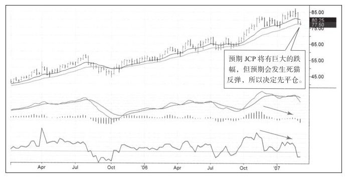
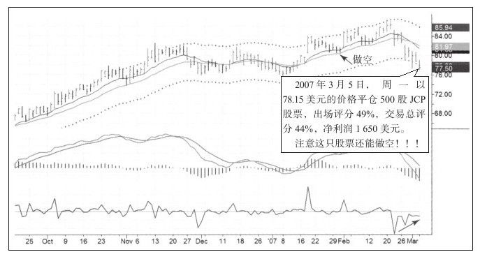
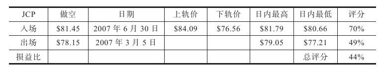
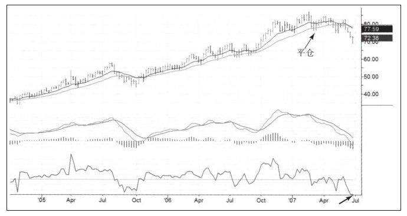

顶部做空比底部做多要困难。下跌趋势即将结束的时候，市场通常表现出烦躁和不安，成交量低且价格窄幅波动；而价格在牛市顶部时，可以想象，成交量巨大，价格波动幅度也很大。如果买入就像是骑上即将跨越栏杆的马，那么做空的感觉就如同骑着在原野上奔跑的马一样。
顶部做空时决定交易结果的关键是资金管理。交易者的交易规模必须小，另外，如果止损，还要做好再进场的准备。如果你准备一次使用掉所有的风险额度，一次假突破之后你就失去了再进场的机会。顶部做空时，交易者的交易头寸应当小于资金管理规则中允许的最大交易头寸，这样才能在股价于己不利时控制风险。交易者需要通过这种方法“制服这匹野马”（见图7-9）。

2007年1月的在线会议上，一位叫黛博拉·温特斯的交易者请我帮他分析JCP。我已经多年没有关注这只股票了，但当看到这只股票时我眼前一亮：股价对抗着疲弱的大盘，周线图显示JCP大跌就在眼前：
·股价很高，一直在最高点稍低的地方震荡。
·两周前创新高失败后股价又回到震荡区间。向上假突破就是强烈的做空信号。
·周线价格在价值之上，也就是在移动平均线之上。
·MACD线及FI出现明显的顶背离，尽管MACD柱没有出现顶背离，但正在下跌。
JCP的日线图走势确认了周线给出的信号，预示着股价就在顶部附近（见图7-10）。日线上出现明显的假突破——假突破当天股价留下长上影，之后股价滑入震荡区间。同样，MACD线和FI指标出现顶背离，MACD柱没有顶背离。只要在线会议给出的品种有吸引力，我就当场宣布我很可能交易这个品种，这也正如我在JCP上的行动一样。我的止盈目标是75美元，也就是周线图的价值区。止损价在88美元，尽管这次交易的损益比不是非常高，但技术信号告诉我价格下跌的概率远远大于上涨的概率。


理想的卖出和做空点是在日线图中价格接近通道上轨时，我要避免在价值附近或低于价值时做空。我也拒绝在通道下轨处做空，因为在那里还预期价格下跌的话有点过分冒险。因为强烈看空，所以我在价值附近做空，比理想的入场点低一点。这不是一个好的入场点，因为在EMA附近做空不会得到软通道效应（上轨对价格形成的压制）的任何帮助，但是，日内入场价仍然不错，在高位成交，得到70%的评分。
日线图有助于理解因做空带来的心理压力。出场图表（见图7-11和图7-12）表明我做空太早，之后的几个星期持有空单让我备感压力。有两个原因让我继续坚持：一是我强烈看空市场并大量放空，一些空单的表现比在JCP上做空的表现要好得多，增强了我看空的观点；二是我在JCP上的交易规模占总资产的比重很小，如果当时我使用紧随性止损，可能已经止损出局了。不贪婪的交易者如果有一个大账户就有这样的优势，如果单次交易账户总风险只有0.25%，他也可以把这个总风险额度提升到0.5%或者更高，只要在2%上限以内就行。满仓交易的小账户就没有这种选择，拥有大账户就像开着大马力汽车，你不必要一直全速前行，因为当发现还有余力可用的时候会非常舒服。



在这次交易进行过程中，我一直和黛博拉保持联系，我鼓励她坚持，尤其是期间的几次反弹，我不断告诉她让她坚持。我的一个交易原则是，如果我采用朋友的建议做交易，我就告诉他我在哪里进出。和朋友分享交易就像分享一顿美味大餐或一同旅行一样（见图7-13）。
